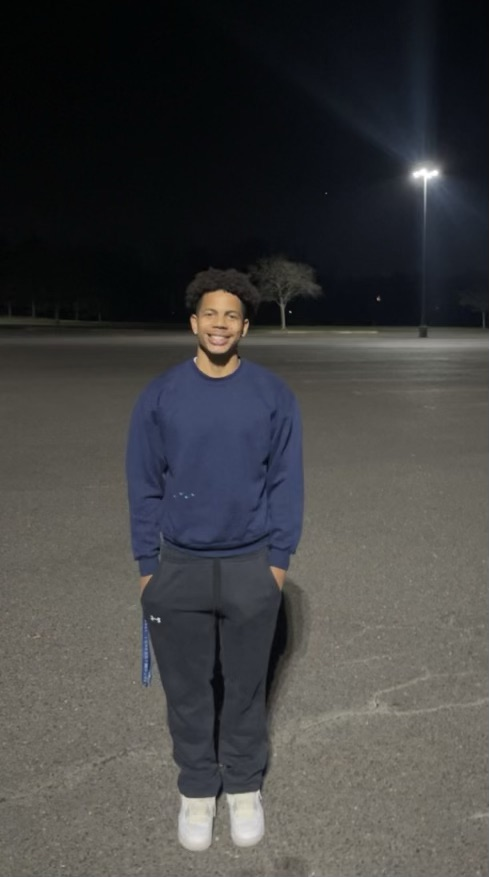

About CJ
CJ is an upcoming photographer whose passion lies in capturing the beauty around him through the lens. He is currently a student at the Randolph-Macon College in Virginia, studying Arts Management with a focus in film. After college, CJ plans to start his own film and photography business to expand his creative pursuits and entrepeneurial experience.
About CJ's Photgraphy
Whether shooting portraits, landscapes, or abstract images, CJ aims to capture visually compelling and eye-catching imagery that resonates with his viewers.